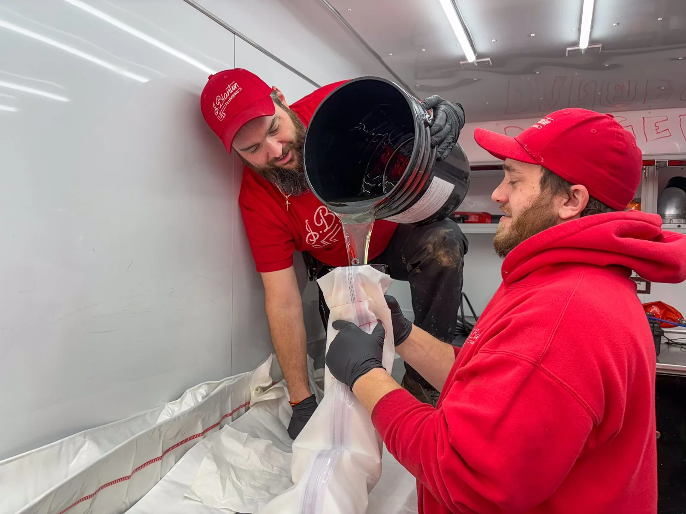
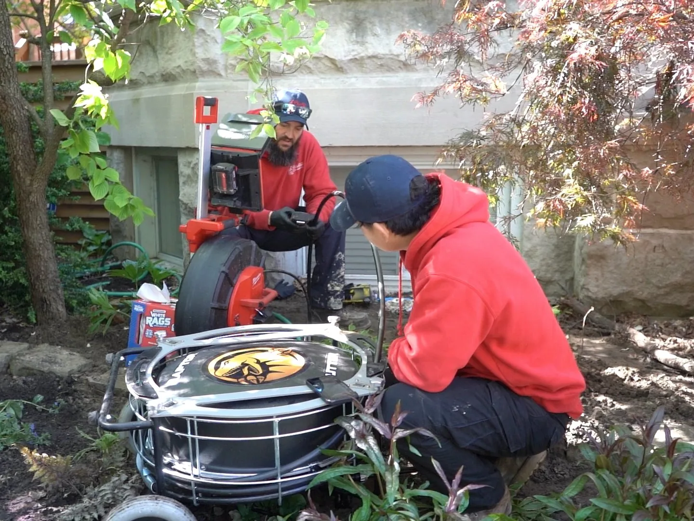
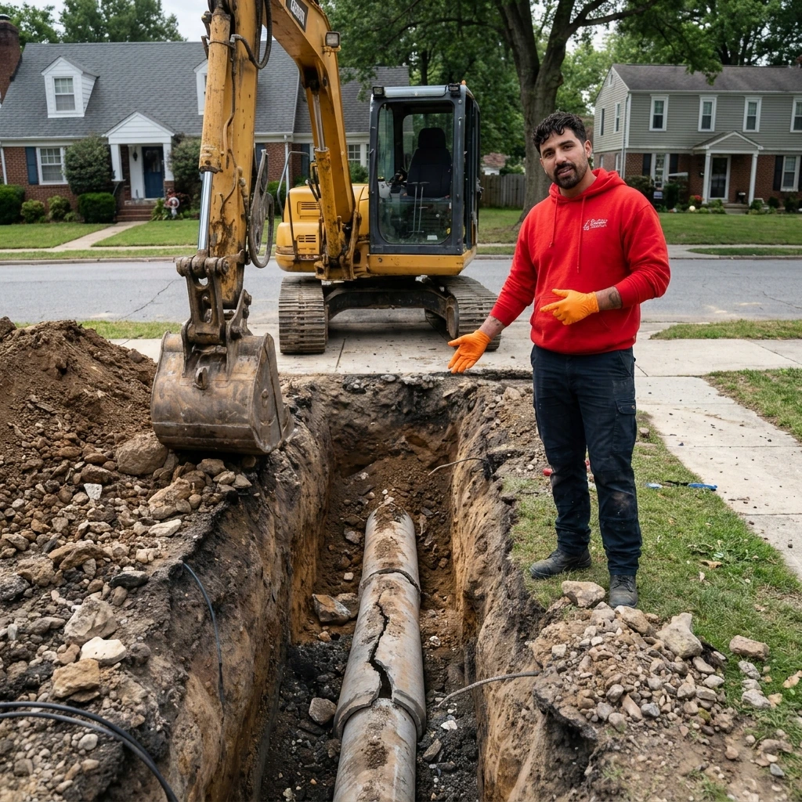
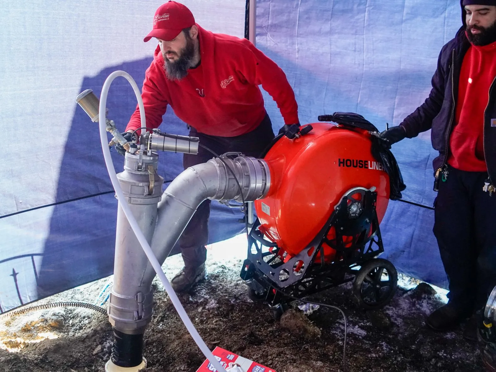
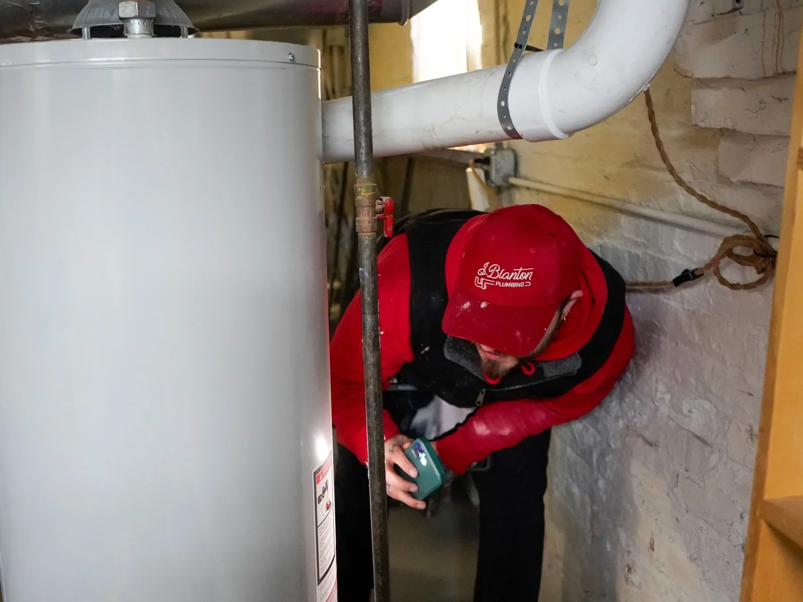
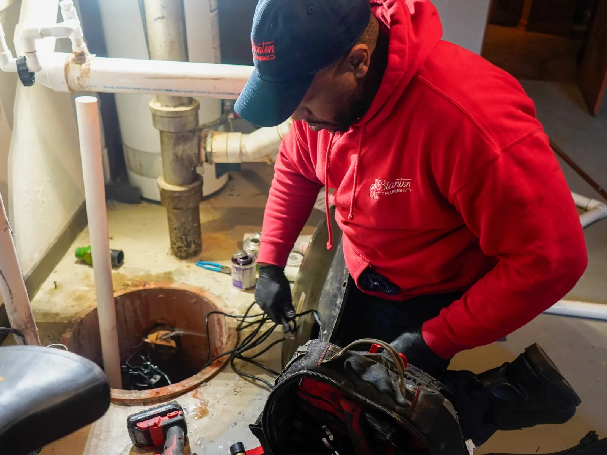
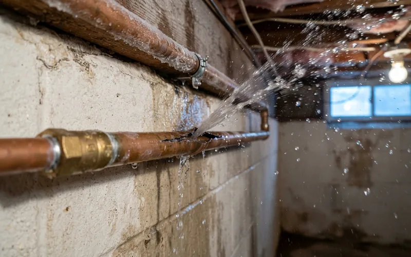
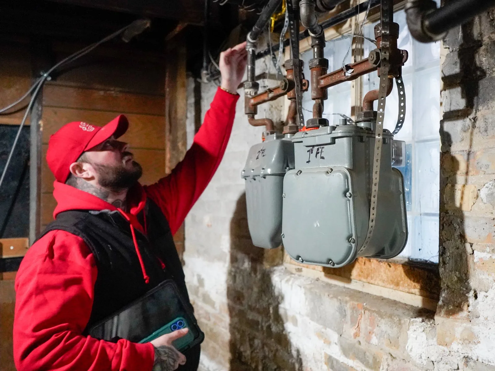

Drain Cleaning
Slow, gurgling or backed-up drains in kitchens, bathrooms and basements.
A damaged sewer line doesn't mean digging up your yard. We repair the line through one or two small access points, so the mature trees, landscaping and driveway on your Highland Park lot stay right where they are.


Trenchless sewer repair, also called no-dig sewer repair, fixes a damaged pipe without digging a trench along its full length. Instead of opening up your yard from the house to the street, we work through one or two access points and repair the pipe from the inside or replace it in place. There are two main methods: cured-in-place pipe (CIPP) lining and pipe bursting. Both fix the line underground, so what's above it stays untouched.
Most sewer lines in Highland Park run under something worth protecting. Nearly half of the homes here were built before 1960, often on wooded lots, and the line from the house to the city main belongs to you.
A trench across a wooded lot can cut through the same tree roots you're trying to live with. Lining or bursting works underground, so the trees, beds and hardscape above the line stay where they are.
Corroded or aging clay and cast iron, root-cracked joints and minor offsets are the problems trenchless handles best. Those are exactly the problems older Highland Park lines tend to have.
In Highland Park, the homeowner owns and maintains the private sewer line from the house to the city main. When you're the one paying to restore the yard afterward, a repair that skips the trench matters.
"Tree roots had broken the remaining clay pipes under my front lawn and ramp. Inserting a liner with a 25 year warranty was the most logical choice I could make."
Backups, slow drains, sewer odor, soft or unusually lush patches of grass, and gurgling drains are the most common signs of a damaged sewer line. Which repair method fits comes down to the type and extent of the damage.
| Situation | Trenchless Usually Works | Needs Traditional Excavation |
|---|---|---|
| Root intrusion cracking the pipe | Yes | Not typically |
| Corroded or aging clay, cast iron, or Orangeburg pipe | Yes | Not typically |
| Minor cracks or offset joints | Yes | Not typically |
| Slow drains or backups traced to pipe damage | Usually, after a camera inspection confirms it | Not typically |
| Fully collapsed section of pipe | Not typically | Yes |
| Severe belly (a low spot where the pipe has sunk) | Not typically | Yes |
| Major structural misalignment | Not typically | Yes |
Not sure which category applies to your line? A camera inspection shows exactly what's happening underground before any repair method gets recommended.
Both methods fix the line underground. Which one fits depends on how damaged the pipe is.
We insert a resin-coated liner into the damaged pipe through the access point, then cure it in place so it hardens into a new pipe inside the old one. Every truck runs light-cured lining technology, which cures faster than older UV, water, or steam-based methods.
For pipes that are too damaged for lining, we pull a new pipe through the old one while breaking the old pipe apart around it. The line gets replaced end to end without opening a trench.
We run a camera before recommending either method, and you see the same footage we do. Then you get a flat rate before any work starts.

4.7 stars from 5,669+ Google reviews across all J. Blanton locations.
"Had a camera inspection of a clogged sewer drain by George. He was very helpful, polite, professional and informative. We ended up moving forward with a sewer trenchless liner service and look forward to a good experience for the main service."
"Excellent experience! Totally professional job. Explained everything! So neat!!! No one would ever know I had sewer work done!"
"Emanuel and his partner G just did our sewer pipe lining and were absolutely fabulous! They kept me in the loop during service and let me know where things were at every step of the way without being too obtrusive, I work from home and was not disturbed in the slightest while they were working."
It's the gentlest option. We work through small access points instead of a trench along the whole line.
Trenchless work is the gentlest option for a wooded lot. We work through one or two small access points instead of a trench, so we're not cutting through the root zone along the whole line. Access point locations are planned around your trees and landscaping after the camera inspection.
Usually. Cracked or root-damaged clay is a good candidate. A collapsed section may still need a spot dig.
Usually, yes. Aging clay, cast iron and Orangeburg pipe with cracks, root intrusion or offset joints are good candidates. A fully collapsed section or a severe belly may still need a spot dig. About 1 in 4 Highland Park homes was built before 1940, so a camera inspection is the first step to see which applies.
It depends on length, method and access. You get a flat-rate price before any work begins.
It depends on the length of the damaged section, the method (lining or bursting), how many access points we need, and what the camera finds. No trench also means no driveway or landscaping restoration afterward. You get a flat-rate price before any work begins.
Sometimes. Older lines can have more than one weak point. The camera shows which applies.
Sometimes. Older lines often have more than one weak point, so fixing the obvious problem doesn't always mean the whole line is covered. Only a camera inspection tells you which one applies to your home, before any repair method gets recommended.
Annual Protection Plan
Prevent catastrophes before they disrupt your life. The No Drip Club ensures your waste and sewer lines are monitored and serviced regularly by J. Blanton’s absolute best.
Slow, gurgling or backed-up drains in kitchens, bathrooms and basements.

Tree roots, cracked clay pipe and repeat backups in the line from your house to the street.

Repair and replacement for tank and tankless water heaters that leak, make noise or run out of hot water too fast.

Sump pump repair, replacement and battery backups to keep your basement dry through heavy rain and snowmelt.

Repair for pipes that froze or burst, from basement water lines to outdoor spigots.

Gas line repair, leak detection and gas fireplace service.
Burst pipes, sewer backups and no hot water, any time of day or night.
Our Highland Park office is at 1904 Green Bay Rd #B, and our phone line is open 24/7.
We also serve Highwood, Fort Sheridan, Deerfield, Bannockburn, Riverwoods, Lake Forest, Lake Bluff, Glencoe and more.